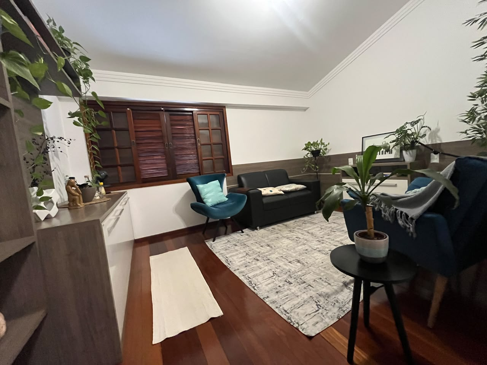
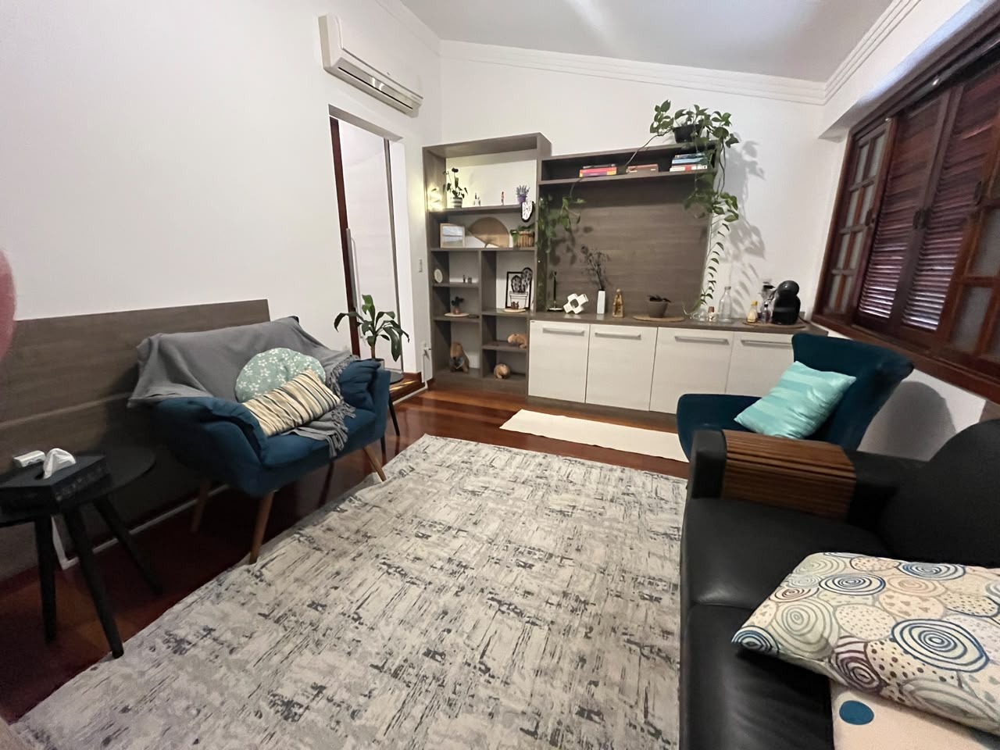

Sobre
Se você chegou aqui, pode estar se perguntando quem sou. Essa é uma pergunta muito difícil de responder. (Quem sou? De onde sou? Para onde vou?) Pois bem, melhor não seguir esse caminho, rs.
Meu nome é Tariane Oliveira, mas já fui Tariane Pereira. Às vezes “Fran” (quando criança) para minha mãe, outras vezes “Ta”. Majoritariamente Tari. E é assim que prefiro e gosto. Tari, tia Tari, irmã Tari, filha Tari, amiga Tari, psico Tari. Bauruense, gosto muito da minha terrinha. Adotada aos 27 dias de idade.
Psicóloga de formação e de paixão. Sou mestre em psicologia pela UNESP e especialista em Terapias Cognitivas pela PUC. Adoro aprender e já recebi prêmios pelos trabalhos que desenvolvi na área acadêmica. Já estive mais atuante no ensino, dando aulas de psicologia (a sala de aula é o lugar mais maravilhoso do mundo!), mas precisei me dedicar a uma paixão só.
Além da leitura, acredito que a arte e o esporte salvam vidas e que olhar para as desigualdades sociais deveria ser regra de fé e prática. Por isso trabalho no Consultório na Rua. É o momento que atendo pessoas vulneráveis e sinto que de alguma forma posso contribuir com a mitigação de preconceitos e fortalecer práticas de cuidado em saúde mental. Trabalho no consultório na rua porque preciso (me alimenta a alma) e trabalho como psicóloga clínica porque eu amo. Desde 2018 faço parte do ITB, com a equipe mais maravilhosa que poderia.
Gosto de cores. No vestir, no estampar, no decorar, no viver… Gosto da vida e penso que “a vida presta”. Acredito que cabe a mim construir uma trajetória com sentido. Mas a gente pode ir junto tentando descobrir. É isso.
Seja bem-vindo! Sinta-se à vontade para sapear por aqui! Um beijão,
Tari
CRP 06/138426
Atuação e Formação
-
Formação
- Psicóloga — CRP 06/138426
- Mestre em Psicologia pela UNESP/Bauru
-
Atuação
- Supervisora em Psicologia Clínica
- Psicóloga Clínica no Instituto Therapie Bauru
- Psicóloga da Saúde no Consultório na Rua da Prefeitura Municipal de Bauru, atendendo população em situação de vulnerabilidade
-
Especializações
- Terapia Cognitivo Comportamental — PUC/RS
- Psicologia Positiva — University of Pennsylvania
- Dependência Química — PASSO 1
- Saúde Mental e Atenção Psicossocial — PASSO 1
- Gestão Pública — FAEL
-
Reconhecimento acadêmico
- Autora de artigos publicados em periódicos nacional e internacional
- Autora de capítulos dos livros Neuropsicologia das Emoções (Editora Ampla) e Psicologia e Saúde (Editora Boreal)
- Menção Honrosa por dois anos consecutivos pelo Congress on Brain, Behavior and Emotions
- Menção Honrosa pela pesquisa sobre tristeza, ruminação e autoestima (UNESP Araçatuba)
- Honra ao Mérito por dois anos consecutivos como docente destaque pela Anhanguera Educacional
- Atuação como docente de graduação e pós-graduação nas instituições Anhanguera Educacional, Instituto Ampliatta e IPOG
- Organizadora do Grupo de Estudos em Terapia Cognitivo-Comportamental do Instituto Therapie Bauru
Para quem é indicado
- [CONTEÚDO PENDENTE]
Contato
Fique à vontade para entrar em contato ou vir até o consultório.
- Telefone: 14 98809-2529
- E-mail: tariane.agenda@gmail.com
- Endereço: Rua Aviador Marques de Pinedo, 7-50 (ver no mapa)
Um pouco do espaço de atendimento

